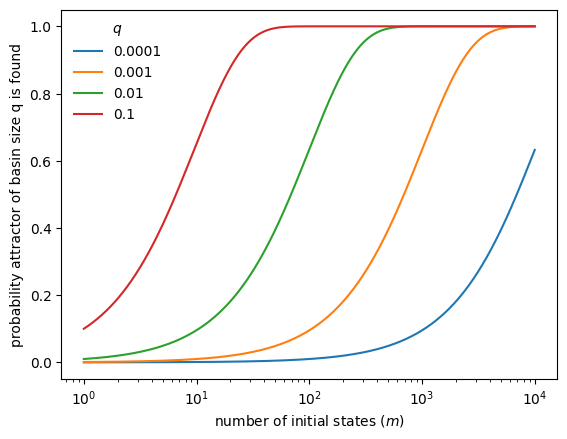

Dynamics of Boolean Networks
In this tutorial, we study the dynamics of Boolean networks. Building on the construction and structural analysis from previous tutorials, we now focus on characterizing the long-term behavior of Boolean networks.
What you will learn
You will learn how to:
simulate Boolean network dynamics under different updating schemes,
compute and classify attractors,
analyze basins of attraction,
relate network structure to dynamical behavior.
Setup
[1]:
import boolforge as bf
import numpy as np
import pandas as pd
import matplotlib.pyplot as plt
State space of a Boolean network
A Boolean network with \(N\) nodes defines a dynamical system on the discrete state space \(\{0,1\}^N\).
Each state is a binary vector
where \(x_i\) denotes the state of node \(i\).
We use a small Boolean network as a running example.
[2]:
string = """
x = y
y = x OR z
z = y
"""
bn = bf.BooleanNetwork.from_string(string, separator="=")
print("Variables:", bn.variables)
print("N:", bn.N)
print("bn.I:", bn.I)
print("bn.F:")
for i, f in enumerate(bn.F):
print(f" F[{i}] = {f!r}")
Variables: ['x' 'y' 'z']
N: 3
bn.I: [array([1]), array([0, 2]), array([1])]
bn.F:
F[0] = BooleanFunction(name='x', f=[0, 1])
F[1] = BooleanFunction(name='y', f=[0, 1, 1, 1])
F[2] = BooleanFunction(name='z', f=[0, 1])
All state vectors follow the variable order given by bn.variables. For small networks, we can enumerate all \(2^N\) states explicitly.
[3]:
all_states = bf.get_left_side_of_truth_table(bn.N)
print(pd.DataFrame(all_states, columns=bn.variables).to_string())
x y z
0 0 0 0
1 0 0 1
2 0 1 0
3 0 1 1
4 1 0 0
5 1 0 1
6 1 1 0
7 1 1 1
Dynamics of synchronous Boolean networks
Under synchronous updating, all nodes are updated simultaneously, defining a deterministic update map
Exact computation
The update map \(F\) can be evaluated directly for any state vector. In BoolForge, this is implemented by the method update_network_synchronously. For convenience, Boolean networks are callable, so that bn(state) evaluates the update map and is equivalent to bn.update_network_synchronously(state).
[4]:
for state in all_states:
print(state, "-->", bn(state))
[0 0 0] --> [0 0 0]
[0 0 1] --> [0 1 0]
[0 1 0] --> [1 0 1]
[0 1 1] --> [1 1 1]
[1 0 0] --> [0 1 0]
[1 0 1] --> [0 1 0]
[1 1 0] --> [1 1 1]
[1 1 1] --> [1 1 1]
This output matches the synchronous truth table representation:
[5]:
print(bn.to_truth_table().to_string())
x(t) y(t) z(t) x(t+1) y(t+1) z(t+1)
0 0 0 0 0 0 0
1 0 0 1 0 1 0
2 0 1 0 1 0 1
3 0 1 1 1 1 1
4 1 0 0 0 1 0
5 1 0 1 0 1 0
6 1 1 0 1 1 1
7 1 1 1 1 1 1
Each state has exactly one successor, so the dynamics consist of transient trajectories leading into attractors (steady states or cycles).
In this example, the network has:
two steady states: \((0,0,0)\) and \((1,1,1)\),
one cyclic attractor of length 2: \((0,1,0) \leftrightarrow (1,0,1)\).
Exhaustive attractor computation
BoolForge contains a dedicated method to identify all attractors of a network under synchronous update.
[6]:
dict_dynamics = bn.get_attractors_synchronous_exact()
The returned dictionary contains:
STG: the synchronous state transition graph,NumberOfAttractors,Attractors,AttractorID,BasinSizes.
For computational reasons, binary states in \(\{0,1\}^N\) are identified by their decimal representation. The state transition graph can be decoded as follows:
[7]:
for state in range(2 ** bn.N):
next_state = dict_dynamics["STG"][state]
print(
state,
"=",
bf.dec2bin(state, bn.N),
"-->",
next_state,
"=",
bf.dec2bin(next_state, bn.N),
)
0 = [0, 0, 0] --> 0 = [0, 0, 0]
1 = [0, 0, 1] --> 2 = [0, 1, 0]
2 = [0, 1, 0] --> 5 = [1, 0, 1]
3 = [0, 1, 1] --> 7 = [1, 1, 1]
4 = [1, 0, 0] --> 2 = [0, 1, 0]
5 = [1, 0, 1] --> 2 = [0, 1, 0]
6 = [1, 1, 0] --> 7 = [1, 1, 1]
7 = [1, 1, 1] --> 7 = [1, 1, 1]
After repeated updates, the system settles into periodic behavior. That is, irrespective of the initial state, an attractor is reached. The list of all attractors (in decimal representation) can be displayed.
[8]:
print(dict_dynamics['Attractors'])
[[0], [2, 5], [7]]
Attractors can be printed in binary representation:
[9]:
for attractor in dict_dynamics["Attractors"]:
print(f"Attractor of length {len(attractor)}:")
for state in attractor:
print(state, bf.dec2bin(state, bn.N))
print()
Attractor of length 1:
0 [0, 0, 0]
Attractor of length 2:
2 [0, 1, 0]
5 [1, 0, 1]
Attractor of length 1:
7 [1, 1, 1]
The information which state transitions to which attractor is stored in a dictionary. Here, the indices correspond to the list of attractors in dict_dynamics['Attractors'].
[10]:
for state_dec,attr_id in enumerate(dict_dynamics['AttractorID']):
print(state_dec,'--> attractor',attr_id,
'which is',dict_dynamics['Attractors'][attr_id])
0 --> attractor 0 which is [0]
1 --> attractor 1 which is [2, 5]
2 --> attractor 1 which is [2, 5]
3 --> attractor 2 which is [7]
4 --> attractor 1 which is [2, 5]
5 --> attractor 1 which is [2, 5]
6 --> attractor 2 which is [7]
7 --> attractor 2 which is [7]
Finally, the basin size of each attractor is determined by the number of states that eventually transition to an attractor. By definition, the sum of all basin sizes is always \(2^N\). To simplify the comparison of the basin size distribution for networks of different size, BoolForge normalizes the basin sizes by default.
[11]:
print(dict_dynamics['BasinSizes'])
[0.125 0.5 0.375]
From the previous two outputs, we see that there is no state (other than 000) that eventually transitions to 000. Half the states transition to the 2-cycle, while 3 out of 8 states transition to the attractor 111.
Monte Carlo simulation
For larger networks, exhaustive enumeration is infeasible. Monte Carlo simulation approximates the attractor landscape.
[12]:
dict_dynamics = bn.get_attractors_synchronous(n_simulations=1000)
print('Discovered attractors:',dict_dynamics['Attractors'])
print('Basin size approximation:',dict_dynamics['BasinSizesApproximation'])
Discovered attractors: [[7], [2, 5], [0]]
Basin size approximation: [0.347 0.533 0.12 ]
The simulation returns additional information:
sampled initial states,
the number of timeouts (trajectories not reaching an attractor before timeout).
[13]:
for key in dict_dynamics:
print(key)
Attractors
NumberOfAttractorsLowerBound
BasinSizesApproximation
AttractorID
InitialSamplePoints
STG
NumberOfTimeouts
In the absence of timeouts: If an attractor has relative basin size \(q\), the probability that it is found from \(m\) random initializations is \(1 - (1-q)^m\).
[14]:
qs = [0.0001, 0.001, 0.01, 0.1]
ms = np.logspace(0, 4, 1000)
fig, ax = plt.subplots()
for q in qs:
ax.semilogx(ms, 1 - (1 - q) ** ms, label=str(q))
ax.legend(title=r"$q$", frameon=False)
ax.set_xlabel("number of initial states ($m$)")
ax.set_ylabel("probability attractor of basin size q is found")
plt.show()

Dynamics of asynchronous Boolean networks
Synchronous updating is computationally convenient but biologically unrealistic. Asynchronous updating assumes that only one node changes at a time.
Steady states under general asynchronous update
BoolForge can compute steady states under general asynchronous updating, where at each step only a single node updates according to its Boolean rule.
[15]:
dict_dynamics = bn.get_steady_states_asynchronous_exact()
print('Discovered steady states:',dict_dynamics['SteadyStates'])
print('Number of steady states (lower bound):',dict_dynamics['NumberOfSteadyStates'])
Discovered steady states: [0, 7]
Number of steady states (lower bound): 2
The result reveals the same two steady states as in the synchronous case. However, the limit cycle observed under synchronous updating disappears under asynchronous dynamics.
In addition, BoolForge returns the full asynchronous state transition graph.
[16]:
for state, successors in dict_dynamics["STGAsynchronous"].items():
print(state,'-->',successors)
0 --> {0: 1.0}
1 --> {1: 0.3333333333333333, 3: 0.3333333333333333, 0: 0.3333333333333333}
2 --> {6: 0.3333333333333333, 0: 0.3333333333333333, 3: 0.3333333333333333}
3 --> {7: 0.3333333333333333, 3: 0.6666666666666666}
4 --> {0: 0.3333333333333333, 6: 0.3333333333333333, 4: 0.3333333333333333}
5 --> {1: 0.3333333333333333, 7: 0.3333333333333333, 4: 0.3333333333333333}
6 --> {6: 0.6666666666666666, 7: 0.3333333333333333}
7 --> {7: 1.0}
The state transition graph describes for each state the possible next states that the system may transition to, in addition to the transition probabilities. This graph can be interpreted as a sparse transition matrix of a Markov chain. Each directed edge corresponds to a possible single-node update.
By repeatedly composing this transition matrix with itself (equivalently, raising it to higher powers), BoolForge computes the absorption probabilities, i.e., the probability that a trajectory starting from any state eventually reaches each steady state.
[17]:
print(dict_dynamics['FinalTransitionProbabilities'])
[[1. 0. ]
[0.5 0.5 ]
[0.33333333 0.66666667]
[0. 1. ]
[0.5 0.5 ]
[0.33333333 0.66666667]
[0. 1. ]
[0. 1. ]]
The size of each basin of attraction is the (column-wise) average of these probabilities.
[18]:
assert np.all(dict_dynamics['BasinSizes'] ==
np.mean(dict_dynamics['FinalTransitionProbabilities'],0))
print('Basin sizes:',dict_dynamics['BasinSizes'])
Basin sizes: [0.33333333 0.66666667]
Note that BoolForge currently does not detect complex cyclic attractors under asynchronous update; for this task, specialized tools such as pystablemotifs are recommended.
In fact, some of BoolForge’s asynchronous update methods fail when the network contains no steady state.
Monte Carlo approximation
As in the synchronous case, BoolForge also contains a Monte Carlo routine for sampling asynchronous dynamics.
The simulation provides:
a lower bound on the number of steady states,
approximate basin size distributions,
[19]:
dict_dynamics = bn.get_steady_states_asynchronous(n_simulations=500)
print('Discovered steady states:', dict_dynamics['SteadyStates'])
print('Number of steady states (lower bound):',dict_dynamics['NumberOfSteadyStatesLowerBound'])
print('Basin size approximation:',dict_dynamics['BasinSizesApproximation'])
Discovered steady states: [0, 7]
Number of steady states (lower bound): 2
Basin size approximation: [0.318 0.682]
Sampling from a fixed initial condition
In biological Boolean network models, a specific state \(\mathbf x \in \{0,1\}^N\) is frequently considered the initial state, e.g., corresponding to the G0 phase of the cell cylce. To enable exploration of the stochastic trajectories from a specific state, BoolForge contains the following method.
[20]:
dict_dynamics = bn.get_steady_states_asynchronous_given_one_initial_condition(
initial_condition=[0, 0, 1], n_simulations=500
)
print('Discovered steady states:', dict_dynamics['SteadyStates'])
print('Number of steady states (lower bound):',dict_dynamics['NumberOfSteadyStatesLowerBound'])
print('Basin size approximation:',dict_dynamics['BasinSizesApproximation'])
Discovered steady states: [7, 9, 0, 2]
Number of steady states (lower bound): 4
Basin size approximation: [0.158 0.162 0.512 0.168]
Note the equivalent analysis under synchronous update is trivial because the dynamics are deterministic and the long-term behavior when starting in a specific initial condition can be found by
[21]:
dict_dynamics = bn.get_attractors_synchronous(n_simulations=1,
initial_sample_points=[[0,0,1]],
initial_sample_points_are_vectors=True)
dict_dynamics
[21]:
{'Attractors': [[2, 5]],
'NumberOfAttractorsLowerBound': 1,
'BasinSizesApproximation': array([1.]),
'AttractorID': {2: 0, 5: 0},
'InitialSamplePoints': [[0, 0, 1]],
'STG': {1: 2},
'NumberOfTimeouts': 0}
Summary
In this tutorial you learned how to:
simulate Boolean network dynamics,
compute synchronous attractors exactly and approximately,
analyze basin sizes,
compute steady states under asynchronous updating.
This concludes the function- and network-level analysis. Subsequent tutorials focus on analyzing stability to perturbations, control analysis, and ensemble experiments.